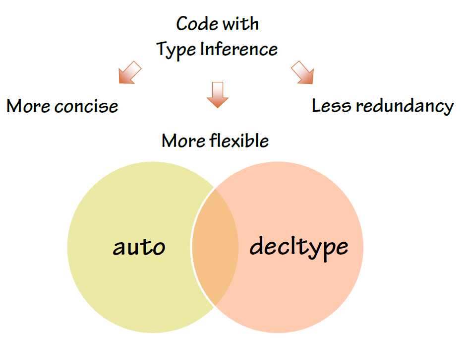

C++11 New Features Forward Declaration Examples Example 1 Example 1 Example 2 Example 3 Example 4 Legacy Code Example 1 Example 2 Example 3 Example 1 Example 2 Example 1 Example Code Example Code Example 1 Example 2 Example Code Example 1 Example 1 Example 2 Example 1 Example 2 Example 1 Example 2 Example 3 Example 1
1 Initializer List
/*
* 1. Initializer List
*/
//C++ 03 initializer list:
int arr[4] = {3, 2, 4, 5};
vector<int> v;
v.push_back(3);
v.push_back(2);
v.push_back(4);
v.push_back(5);
// C++ 11 extended the support
vector<int> v = {3, 4, 1, 9}; // Calling initializer_list constructor
// All the relevant STL containers have been updated to accept initializer_list.
// Define your own initializer_list constructor:
#include <initializer_list>
class BoVector {
vector<int> m_vec;
public:
BoVector(const initializer_list<int>& v) {
for (initializer_list<int>::iterator itr = v.begin(); itr!=v.end(); ++ itr)
m_vec.push_back(*itr);
}
};
BoVector v = {0, 2, 3, 4};
BoVector v{0, 2, 3, 4}; // effectively the same
// Automatic normal Initialization
class Rectangle {
public:
Rectangle(int height, int width, int length){ }
};
void draw_rect(Rectangle r);
int main() {
draw_rect({5, 6, 9}); // Rectangle{5,6,9} is automatically called
}
// Note: use it with caution.
// 1. Not very readable, even with the help of IDE. Funcion name rarely indicates
// the type of parameter the function takes.
// 2. Function could be overloaded with differenct parameter types.
void draw_rect(Triangle t);
2 Uniform Initialization
/*
* 2. Uniform Initialization
*/
// C++ 03
class Dog { // Aggregate class or struct
public:
int age;
string name;
};
Dog d1 = {5, "Henry"}; // Aggregate Initialization
// C++ 11 extended the scope of curly brace initialization
class Dog {
public:
Dog(int age, string name) {...};
};
Dog d1 = {5, "Henry"};
/* Uniform Initialization Search Order:
* 1. Initializer_list constructor
* 2. Regular constructor that takes the appropriate parameters.
* 3. Aggregate initializer.
*/
Dog d1{3};
class Dog {
public:
int age; // 3rd choice
Dog(int a) { // 2nd choice
age = a;
}
Dog(const initializer_list<int>& vec) { // 1st choice
age = *(vec.begin());
}
};
3 Type Inference

3.1 auto type
Why Else Do We Need It?
- Don’t Repeat Yourself
- Higher level of abstraction
- Type changes are better localized
- Easier refactoring
- Simpler template code
- Declaring variables of undocumented or unnamable types
/*
* 3. auto type
*/
std::vector<int> vec = {2, 3, 4, 5};
// C++ 03
for (std::vector<int>::iterator it = vec.begin(); it!=vec.end(); ++ it)
m_vec.push_back(*it);
// C++ 11: use auto type
for (auto it = vec.begin(); it!=vec.end(); ++ it)
m_vec.push_back(*it);
auto a = 6; // a is a integer
auto b = 9.6; // b is a double
auto c = a; // c is an integer
auto const x = a; // int const x = a
auto& y = a; // int& y = a
// It's static type, no run-time cost, fat-free.
// It also makes code easier to maintain.
// 1. Don't use auto when type conversion is needed
// 2. IDE becomes more important
autoj = 10, str= "error"; // compile error, 必须为同一数据类型。
3.2 decltype
/*
* decltype
*
* It is equivalent of GNU typeof
*/
const int& foo(); // Declare a function foo()
decltype(foo()) x1; // type is const int&
struct S { double x; };
decltype(S::x) x2; // x2 is double
auto s = make_shared<S>();
decltype(s->x) x3; // x3 is double
int i;
decltype(i) x4; // x4 is int
float f;
decltype(i + f) x5; // x5 is float
// decltype turns out to be very useful for template generic programming
template<type X, type Y>
void foo(X x, Y y) {
...
decltype(x+y) z;
...
}
// How about return type needs to use decltype?
template<type X, type Y>
decltype(x+y) goo(X x, Y y) { // Error: x & y are undefined
return x + y;
}
// Combining auto and decltype to implement templates with trailing return type
template<type X, type Y>
auto goo(X x, Y y) -> decltype(x+y) {
return x + y;
}
allows getting the type of an expression
int i = 10;
cout << typeid(decltype(i + 1.0)).name() << endl; // outputs "double"
AssertThat((is_same<decltype(i + 1.0), double>::value), Equals(true));
vector<int> a;
decltype(a) b;
b.push_back(10);
decltype(a)::iterator iter = a.end();
//declval allows the use of a type without public constructors in a decltype expression
class A
{
private:
A();
};
#if COMPILE_ERROR
cout << typeid(decltype(A())).name() << endl; // doesn't compile:
// A() is private
#endif
cout << typeid(decltype(declval<A>())).name() << endl;
4 template
4.1 Variadic Template
/* * Variadic Template * * A template that can take any number of template arguments of any type. * Both class and function templates can be variadic. */ template<typename... arg> class BoTemplate; BoTemplate<float> t1; BoTemplate<int, long, double, float> t2; BoTemplate<int, std::vector<double>> t3; BoTemplate<> t4; // Combination of variadic and non-variadic argument template<typename T, typename... arg> class BoTemplate; BoTemplate<> t4; // Error BoTemplate<int, long, double, float> t2; // OK // Define a default template argument template<typename T = int, typename... arg> class BoTemplate;
Example:
template<typenameStream, typename... Columns>
classCSVPrinter
{
public:
voidoutput_line(constColumns&... columns);
// other methods, constructors etc. not shown
};
- Working with Parameter Packs
template<typenameStream, typename... Columns>
classCSVPrinter
{
Stream& _stream;
array<string, sizeof...(Columns)> _headers;
// rest of implementation
};
- Traversing Template Parameter Packs
template<typename... Types> // allow zero parameters structTupleSize; template<typenameHead, typename... Tail> // traverse types structTupleSize<Head, Tail...> { staticconstsize_tvalue = sizeof(Head) + TupleSize<Tail...>::value; }; template<> structTupleSize<> // end recursion { staticconstsize_tvalue = 0; }; TupleSize<>::value;// 0 TupleSize<int, double, char>::value; // 13 on a 32-bit platform - Constraining Parameter Packs to One Type
template<typename... Strings> voidoutput_strings(conststring& s, constStrings&... strings) const { write_column(s, _sep); output_strings(strings...); } voidoutput_strings(conststring& s) const { write_column(s, "\n"); }
4.2 Template Alias
/*
* Template Alias
*/
template<class T> class Dog { /* ... */ };
template<class T>
using DogVec = std::vector<T, Dog<T>>;
DogVec<int> v; // Same as: std::vector<int, Dog<int>>
4.3 extern Templates
// --file1.h --
template<typenameT>
T templated_func(constT& t)
{
returnt;
}
// --file1.cpp --
usingnamespacestd;
voidf()
{
cout<< templated_func(10);
}
// --file2.cpp --
usingnamespacestd;
externtemplateinttemplated_func(constint&);
voidg()
{
cout<< templated_func(1234);
}
4.4 Local and Unnamed Types as Template Arguments
one example:
{
structA
{
string name() const{ return"I'm A!"; }
};
vector<A> v(10);
cout<< v[0].name() << endl;
}
Another example:
template<typenameT>
voidprint(constT& t)
{
t.print();
}
struct
{
intx = 10;
voidprint() const
{
cout<< x;
}
} a;
print(a);
5 foreach
/*
* 4. foreach
*/
// C++ 03:
for (vector<int>::iterator itr = v.begin(); itr!=v.end(); ++ itr)
cout << (*itr);
// C++ 11:
for (auto i: v) { // works on any class that has begin() and end()
cout << i ; // readonly access
}
for (auto& i: v) {
i++; // changes the values in v
} // and also avoids copy construction
auto x = begin(v); // Same as: int x = v.begin();
int arr[4] = {3, 2, 4, 5};
auto y = begin(arr); // y == 3
auto z = end(arr); // z == 5
// How this worked? Because begin() and end() are defined for array.
// Adapt your code to third party library by defining begin() and end()
// for their containers.
6 nullptr
/*
* 5. nullptr
*
* To replace NULL in C++ 03
*/
void foo(int i) { cout << "foo_int" << endl; }
void foo(char* pc) { cout << "foo_char*" << endl; }
int main() {
foo(NULL); // Ambiguity
// C++ 11
foo(nullptr); // call foo(char*)
}
7 enum class
/*
* 6. enum class
*/
// C++ 03
enum apple {green_a, red_a};
enum orange {big_o, small_o};
apple a = green_a;
orange o = big_o;
if (a == o)
cout << "green apple and big orange are the same\n";
else
cout << "green apple and big orange are not the same\n";
// C++ 11
enum class apple {green, red};
enum class orange {big, small};
apple a = apple::green;
orange o = orange::big;
if (a == o)
cout << "green apple and big orange are the same\n";
else
cout << "green apple and big orange are not the same\n";
// Compile fails because we haven't define ==(apple, orange)
通过关键字class声明的枚举类型是Scoped Enum，引用时必须包含枚举类型的 名称。
- Specifying the Underlying Type
enumDirection : unsignedshort { South, West, East, North }; cout<< sizeof(North) << endl; // outputs sizeof(unsigned short) enumColor: double// error { Black }; - Forward Declaration
// flight_board.h enumclassAirportCode; // forward declared enum structFlightBoard { voidprint_airport_name(AirportCodecode) {} voidprint_flight(AirportCodecode, conststring& flight) { // ... print_airport_name(code); } }; // navigator.h structNavigator { Navigator(); private: enumCompassPoint: int; // forward declaration CompassPoint_compass_point; }; // navigator.cpp enumNavigator::CompassPoint: int{ North, South, East, West}; Navigator::Navigator() : _compass_point(North) {}Forward Declaration Rules
- Forward declaration has to include the type (implicitly or explicitly)
- The underlying type has to match between all declarations and definition
- Declarations can’t change from scoped to unscopedenum, or vice versa
enumE : short; // OK enumF; // error, underlying type is required enumclassG : short; // OK enumclassH; // OK, underlying type for scoped enumsis intby default enumE : short; // OK, redeclaration enumclassG : short; // OK, redeclaration enumclassH; // OK, redeclaration enumclassH : int; // OK, redeclarationwith the same underlying type enumclassE : short; // error, can't change from unscopedto scoped enumG : short; // error, can't change from scoped to unscoped enumE : int; // error, different underlying type enumclassG; // error, different underlying type enumclassH : short; // error, different underlying type enumclassH {}; // OK, this redeclarationis a definition
8 static_assert
/* * 7. static_assert */ // run-time assert assert( myPointer != NULL ); // Compile time assert (C++ 11) static_assert( sizeof(int) == 4 );
structBase
{
virtual~Base() {}
};
template<typenameT>
classDerived : publicT
{
static_assert(has_virtual_destructor<T>::value,
"The base class must have a virtual destructor");
};
Derived<Base> d; // OK
Derived<string> s; // triggers static_assert
9 Class
9.1 In-class initializers for non-static data members
classJetPlane
{
public:
string _model = "Unknown";
vector<Engine> _engines {Engine(), Engine()};
};
classJetPlane
{
vector<Engine> _engines;
string _manufacturer;
string _model;
public:
JetPlane() :
_engines(2), _manufacturer("Unknown"), _model("Unknown")
{}
JetPlane(conststring& manufacturer) :
_engines(2), _manufacturer(manufacturer), _model("Unknown")
{}
};
classJetPlane
{
vector<Engine> _engines {Engine(), Engine()};
string _manufacturer = "Unknown";
string _model = "Unknown";
public:
JetPlane()
{}
JetPlane(conststring& manufacturer) : _manufacturer(manufacturer)
{}
};
classJetPlane
{
public:
string _manufacturer = "Unknown";
string _model = "Unknown";
vector<Engine> _engines {get_engine_count(_manufacturer, _model)};
staticsize_tget_engine_count(conststring& manufacturer,
conststring& model);
};
structCounter
{
int_count = 1;
};
Counter c = {10};
classJetPlane
{
public:
vector<Engine> _engines {2};
JetPlane() : _engines(4)
{}
};
9.2 Inheriting Constructors
classPlane
{
vector<Engine> _engines;
string _manufacturer;
string _model;
public:
Plane(conststring& manufacturer);
Plane(constPlaneID& tail_number);
};
classJetPlane: publicPlane
{
public:
// boring
JetPlane(conststring& manufacturer) : Plane(manufacturer)
{}
// boring
JetPlane(constPlaneID& tail_number) : Plane(tail_number)
{}
};
classJetPlane: publicPlane
{
usingPlane::Plane;
};
JetPlaneplane("Boeing"); // OK
classPropPlane: publicPlane
{
public:
usingPlane::Plane;
// overrides Plane constructor with the same parameters
PropPlane(conststring& manufacturer) : Plane(manufacturer)
{
cout<< "In PropPlane()"<< endl;
}
};
PropPlaneprop_plane("ATR");
classPlane
{
string _manufacturer;
public:
Plane(conststring& manufacturer) : _manufacturer(manufacturer)
{}
};
classBoat
{
string _boat_manufacturer;
public:
Boat(conststring& manufacturer) : _boat_manufacturer(manufacturer)
{}
};
classFloatPlane: publicPlane, publicBoat
{
usingPlane::Plane;
usingBoat::Boat;
FloatPlane(conststring& manufacturer) : Plane(manufacturer), Boat("n/a")
{}
};
classPropPlane: publicPlane
{
size_t_prop_count;
public:
usingPlane::Plane;
};
// oops, _prop_countis not initialized
PropPlaneprop_plane("ATR");
9.3 Delegating Constructor
/*
* 8. Delegating Constructor
*/
class Dog {
public:
Dog() { ... }
Dog(int a) { Dog(); doOtherThings(a); }
};
// C++ 03:
class Dog {
init() { ... };
public:
Dog() { init(); }
Dog(int a) { init(); doOtherThings(); }
};
/* Cons:
* 1. Cumbersome code.
* 2. init() could be invoked by other functions.
*/
// C++ 11:
class Dog {
int age = 9;
public:
Dog() { ... }
Dog(int a) : Dog() { doOtherThings(); }
};
// Limitation: Dog() has to be called first.
classJetPlane
{
vector<Engine> _engines;
string _manufacturer;
string _model;
public:
JetPlane() : JetPlane(2, "Unknown", "Unknown")
{}
JetPlane(conststring& manufacturer, conststring& model) :
JetPlane(Lookup::engine_count(manufacturer, model), manufacturer, model)
{
assign_tail_number();
}
private:
JetPlane(size_tengine_count, conststring& manufacturer,
conststring& model) :
_engines(engine_count), _manufacturer(manufacturer), _model(model)
{
configure_engines();
}
// ...
};
9.4 Default Methods
classJetPlane
{
public:
JetPlane() = default;
JetPlane(constJetPlane& other);
JetPlane(JetPlane&&) = default;
};
classJetPlane
{
public:
JetPlane() = default;
virtual~JetPlane() = default;
protected:
JetPlane(constJetPlane& other) = default;
JetPlane& operator=(constJetPlane&) = default;
};
9.5 Deleted Methods
Purpose:
- Disable some instantiations of a template
- Disable unwanted conversion
- Disable heap allocation
/*
* 12. delete
*/
class Dog {
Dog(int age) {}
}
Dog a(2);
Dog b(3.0); // 3.0 is converted from double to int
a = b; // Compiler generated assignment operator
// C++ 11:
class Dog {
Dog(int age) {}
Dog(double ) = delete;
Dog& operator=(const Dog&) = delete;
}
template<typenameT>
voidserialize(constT& obj)
{
cout<< obj.to_string();
};
// PasswordStorenot allowed to be serialized
voidserialize(constPasswordStore&) = delete;
classAltimeter
{
public:
Altimeter(double) {}
Altimeter(int) = delete;
};
classStackOnly
{
public:
void* operator new(size_t) = delete;
};
9.6 override (for virtual function)
/*
* 9. override (for virtual function)
*
* To avoid inadvertently create new function in derived classes.
*/
// C++ 03
class Dog {
virtual void A(int);
virtual void B() const;
}
class Yellowdog : public Dog {
virtual void A(float); // Created a new function
virtual void B(); // Created a new function
}
// C++ 11
class Dog {
virtual void A(int);
virtual void B() const;
void C();
}
class Yellowdog : public Dog {
virtual void A(float) override; // Error: no function to override
virtual void B() override; // Error: no function to override
void C() override; // Error: not a virtual function
}
9.7 final (for virtual function and for class)
/*
* 10. final (for virtual function and for class)
*/
class Dog final { // no class can be derived from Dog
...
};
class Dog {
virtual void bark() final; // No class can override bark()
};
structBase final
{};
structDerived : publicBase // compile error, can't inherit from
{}; // final class
structInterface
{
virtualvoidf()
{}
};
structBase : publicInterface
{
virtualvoidf() final
{}
};
structDerived : publicBase
{
virtualvoidf() // compile error, can't override
{} // a final method
};
9.8 Compiler Generated Default Constructor
/*
* 11. Compiler Generated Default Constructor
*/
class Dog {
Dog(int age) {}
};
Dog d1; // Error: compiler will not generate the default constructor
// C++ 11:
class Dog {
Dog(int age);
Dog() = default; // Force compiler to generate the default constructor
};
9.9 Extended Friend Declarations
classA;
classB;
classFriend
{
friendclassA; // old declarations are still OK
friendB; // you can also do this now
};
classAmigo
{
friendclassD; // OK: declares new class D
friendD; // error: undeclared class D
};
classB;
typedefB B2;
classAmigo
{
friendB2; // OK
};
template<typenameT, typenameU>
classAmi
{
friendT; // OK
friendclassU; // still an error, can't use an elaborate specifier
// in a template
};
Ami<string, string> rc; // OK
Ami<char, string> f; // OK, "friend char" has no effect in the template
9.10 Nested Class Access Rights
classJetPlane
{
// ...
private:
int_flap_angle;
classGPSNavigator{};
classAutopilot
{
GPSNavigator_gps_navigator; // OK, JetPlane::Autopilot can access
// JetPlane::GPSNavigator
voidadjust_flaps(JetPlane& plane, intflap_angle)
{
plane._flap_angle= flap_angle; // OK, JetPlane::Autopilot can
// access JetPlane::_flap_angle
}
};
};
10 constexpr
/*
* 13. constexpr
*/
int arr[6]; //OK
int A() { return 3; }
int arr[A()+3]; // Compile Error
// C++ 11
constexpr int A() { return 3; } // Forces the computation to happen
// at compile time.
int arr[A()+3]; // Create an array of size 6
// Write faster program with constexpr
constexpr int cubed(int x) { return x * x * x; }
int y = cubed(1789); // computed at compile time
//Function cubed() is:
//1. Super fast. It will not consume run-time cycles
//2. Super small. It will not occupy space in binary.
What Else Is It Good for?
- Ensure constant initialization at compile time
- Constant expressions can be used in case labels etc.
- Guaranteed not to cause race conditions
11 Literals
11.1 Unicode literals and New String Literals
/* * 14. New String Literals */ // C++ 03: char* a = "string"; // C++ 11: char* a = u8"string"; // to define an UTF-8 string. char16_t* b = u"string"; // to define an UTF-16 string. char32_t* c = U"string"; // to define an UTF-32 string. char* d = R"string \\" // to define raw string.
| Prefix | Character Type | String Type |
|---|---|---|
| u8 | char | strin |
| u | char16t | u16string |
| U | char32t | u32string |
11.2 Raw Literals
cout<< R"(use "\n" for newlines)"<< endl;
R"Nonewline \n"
LR"Nonewline \n"
u8R"No newline \n"
uR"Nonewline \n"
UR"Nonewline \n"
R"("\w+\\\w+")"
"\"\\w+\\\\\\w+\""
R"(grep-r "\.js" *)"
cout<< R"!!(A raw literal is delimited with "( )")!!"<< endl;
R"(multiline
literal)"
11.3 User defined Literals
/*
* 17. User defined Literals
*/
// C++ went a long way to make user defined types (classes) to behave same as buildin types.
// User defined literals pushes this effort even further
//Old C++:
long double height = 3.4;
// Remember in high school physics class?
height = 3.4cm;
ratio = 3.4cm / 2.1mm;
//Why we don't do that anymore?
// 1. No language support
// 2. Run time cost associated with the unit translation
// C++ 11:
long double operator"" _cm(long double x) { return x * 10; }
long double operator"" _m(long double x) { return x * 1000; }
long double operator"" _mm(long double x) { return x; }
int main() {
long double height = 3.4_cm;
cout << height << endl; // 34
cout << (height + 13.0_m) << endl; // 13034
cout << (130.0_mm / 13.0_m) << endl; // 0.01
}
//Note: add constexpr to make the translation happen in compile time.
// Restriction: it can only work with following paramters:
char const*
unsigned long long
long double
char const*, std::size_t
wchar_t const*, std::size_t
char16_t const*, std::size_t
char32_t const*, std::size_t
// Note: return value can be of any types.
// Example:
int operator"" _hex(char const* str, size_t l) {
// Convert hexdecimal formated str to integer ret
return ret;
}
int operator"" _oct(char const* str, size_t l) {
// Convert octal formated str to integer ret
return ret;
}
int main() {
cout << "FF"_hex << endl; // 255
cout << "40"_oct << endl; // 32
}
C++ went a long way to make user defined types (classes) to behave same as build-in types. User defined literals pushes this effort even further
add constexpr to make the translation happen in compile time.
constexpr long double operator"" _cm(long double x) { return x * 10; }
constexpr long double operator"" _m(long double x) { return x * 1000; }
constexpr long double operator"" _mm(long double x) { return x; }
int main(int argc, char *argv[])
{
long double height = 3.4_cm;
cout << height << endl; // 34
cout << (height + 13.0_m) << endl; // 13034
cout << (130.0_mm / 13.0_m) << endl; // 0.01
return 0;
}
Restriction: it can only work with following parameters:
char const* unsigned long long long double char const*, std::size_t wchar_t const*, std::size_t char16_t const*, std::size_t char32_t const*, std::size_t
更多例子：
int operator"" _bin(const char* str, size_t l)
{
int ret = 0;
for (size_t i = 0;i < l; i++) {
if (str[i] == '1')
ret += 1 << (l-i-1);
}
return ret;
}
int main(int argc, char *argv[])
{
cout<<"110"_bin<<endl;
cout<<"111"_bin<<endl;
return 0;
}
12 lambda function
Why Do We Need This Thing
- Improve locality
- Reduce boilerplate
- Express intentions better
Lambda Parameters
- No default values for parameters
- No variable length argument lists
- No unnamed parameters
/*
* 15. lambda function
*/
cout << [](int x, int y){return x+y}(3,4) << endl; // Output: 7
auto f = [](int x, int y) { return x+y; };
cout << f(3,4) << endl; // Output: 7
template<typename func>
void filter(func f, vector<int> arr) {
for (auto i: arr) {
if (f(i))
cout << i << " ";
}
}
int main() {
vector<int> v = {1, 2, 3, 4, 5, 6 };
filter([](int x) {return (x>3);}, v); // Output: 4 5 6
...
filter([](int x) {return (x>2 && x<5);}, v); // Output: 3 4
int y = 4;
filter([&](int x) {return (x>y);}, v); // Output: 5 6
//Note: [&] tells compiler that we want variable capture
}
// Lambda function works almost like a language extention
template
for_nth_item
non-local variables can always be accessed in a lambda, local variables have to be captured.
// non-local variables can always be accessed in a lambda
function<bool()> g()
{
static auto a = 5;
static auto b = -3;
return []() { return a + b > 0; };
}
// local variables have to be captured
function<bool()> f()
{
auto a = 5;
auto b = -3;
// won't compile if a & b aren't captured
return [a, b]() { return a + b > 0; };
}
Rules of Thumb for Lambdas
- Write short and clear lambdas
- If it’s becoming long, you might need a function object
- Don’t duplicate code across lambda expressions
13 concurrency
C++定义了线程，互斥量，条件变量以及future等在多线程编程中用到的一些 基础工具。
#include <iostream>
using namespace std;
int factorial(int N)
{
}
int main()
{
/* thread */
std::thread t1(factorial, 6);
std::this_thread::sleep_for(chrono::miliseconds(3));
chrono::steady_clock::time_point tp = chrono::steady_clock::now() + chrono::miliseconds(4);
std::this_thread::sleep_until(tp);
/* Mutex */
std::mutex mu;
std::lock_guard<mutex> locker(mu)
//can lock and unlock many times, can transfer ownershipt using std::move()
std::unique_lock<mutex> ulocker(mu);
ulocker.try_lock();
ulocker.try_lock_for(chrono::nanoseconds(500));
ulocker.try_lock_until(tp);
/* Condition Variable */
std::condition_variable cond;
cond.wait_for(ulocker, chrono::miliseconds(2));
cond.wait_until(ulocker, tp);
/*Future and Promise */
std::promise<int> p;
std::future<int> f = p.get_future();
f.get();
f.wait();
f.wait_for(chrono::miliseconds(2));
f.wait_until(tp);
/* async()) */
// can lauch a function in the same thread or another thread
std::future<int>fu = async(factorial, 6);
/* Packeged Task */
std::packaged_task<int(int)> f(factorial);
std::future<int> fu2 = t.get_future();
t(6);
}
14 Move semantics
vector<string> v;
v.push_back(string("a"));
v.push_back(string("b"));
string s = string("Boeing") + "737"+ "-"+ "300";
classJetPlane
{
public:
JetPlane();
JetPlane(constJetPlane&);
JetPlane& operator=(constJetPlane&);
JetPlane(JetPlane&&);
JetPlane& operator=(JetPlane&&);
};
What Are the Benefits?
- Better performance
- More clarity of intention in the code
Surface3D get_surface(constLatitude& lat, constLongitude& lon) { Surface3D surface; // load up millions of points making up the surface returnsurface; } - Better support for exclusive resource ownership
Overload Resolution
voidf(JetPlane& plane); voidf(constJetPlane& plane); voidf(JetPlane&& plane); voidf(constJetPlane&& plane);
- Maintain const-correctness -don’t bind constvalue to non-constref
- Bind lvaluesto lvaluerefs; bind rvaluesto rvaluerefs if possible
- If rule 2 isn’t enough to resolve ambiguity, choose an overload
which preserves const-ness
JetPlanejet; f(jet); // f(JetPlane&) constJetPlanegrounded_jet; f(grounded_jet); // f(constJetPlane&) f(JetPlane()); // f(JetPlane&&) automake_const_jet= []() -> constJetPlane{ returnJetPlane(); }; f(make_const_jet()); // f(constJetPlane&&)
Compiler Generated Move Operations
- No user-declared copy constructor or copy assignment operator
- No user-declared move assignment operator
- No user-declared destructor
- The move constructor wouldn’t be implicitly marked as deleted
Implementing Your Own Move Operations
classA
{
double_d;
int* _p;
string _str;
public:
A(A&& rhs) : _d(rhs._d), _p(rhs._p), _str(move(rhs._str))
{
rhs._p = nullptr;
rhs._str.clear();
}
A& operator=(A&& rhs)
{
delete_p;
_d = rhs._d;
_p = rhs._p;
_str= move(rhs._str); // careful!
rhs._p = nullptr;
rhs._str.clear();
return*this;
}
};
voidJetPlane::set_model(conststring& model)
{
_model = model;
}
voidJetPlane::set_model(string&& model)
{
_model = move(model); // careful: model is a named rvalueref so it's an
// lvalue; use std::move to force a move operation
model.clear();
}
string model("Airbus 320");
JetPlanejet;
jet.set_model(model); // copy overload used
jet.set_model(string("Airbus 320")); // move overload used
Move-only Types
classMoveOnly
{
int* _p;
public:
MoveOnly() : _p(newint(10)) {}
~MoveOnly() { delete_p; }
MoveOnly(constMoveOnly& rhs) = delete;
MoveOnly& operator=(constMoveOnly& rhs) = delete;
MoveOnly(MoveOnly&& rhs)
{
*this= move(rhs);
}
MoveOnly& operator=(MoveOnly&& rhs)
{
if(this== &rhs)
return*this;
_p = rhs._p;
rhs._p = nullptr;
return*this;
}
};
MoveOnlya;
MoveOnlyb(a); // copying, doesn't compile
MoveOnlyc(move(a)); // OK
MoveOnlyd;
d= move(b); // OK
15 Reference Collapsing and rvaluesin Templates
Point p1(10, 10); usingPointRef= Point&; PointRef& p2 = p1;
- A& & becomes A&
- A& && becomes A&
- A&& & becomes A&
- A&& && becomes A&&
template<typenameT> voidf(T&&);
- f(lvalueA)=> T is A&=>f(A& &&) =>f(A&)
- f(rvalueA) =>T is A=>f(A&&)
16 Perfect forwarding
unique_ptr<vector<Point>> p_points(newvector<Point>(10));
template<typenameT, typenameArg>
unique_ptr<T> make_unique(Argarg)
{
returnunique_ptr<T>(newT(arg));
}
template<typenameT, typenameArg>
unique_ptr<T> make_unique(Arg&arg)
{
returnunique_ptr<T>(newT(arg));
}
make_unique<vector<int>>(10); // can't convert argument from intto int&
template<typenameT, typenameArg>
unique_ptr<T> make_unique(constArg& arg)
{
returnunique_ptr<T>(newT(arg));
}
template<typenameT, typenameArg>
unique_ptr<T> make_unique(Arg& arg)
{
returnunique_ptr<T>(newT(arg));
}
inta = 10;
make_unique<vector<int>>(a); // OK, Arg& overload
make_unique<vector<int>>(10); // OK, constArg& overload
template<typenameT, typenameT1, typenameT2>
unique_ptr<T> make_unique(T1&& arg1, T2&& arg2)
{
returnunique_ptr<T>(newT(forward<T1>(arg1), forward<T2>(arg2)));
}
template<typenameT, typename... Args>
unique_ptr<T> make_unique(Args&&... args)
{
returnunique_ptr<T>(newT(forward<Args>(args)...));
}
#include<utility>
17 Inline Namespaces
namespaceAPI
{
inlinenamespacev2
{
// v2 processes doubles instead of ints
voidprocess(vector<double>)
{}
}
namespacev1
{
voidprocess(vector<int>)
{}
}
}
vector<double> doubles;
API::process(doubles);
vector<int> ints;
API::v1::process(ints);